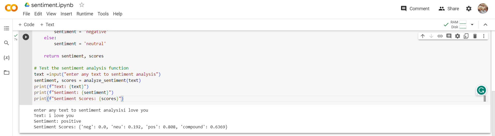
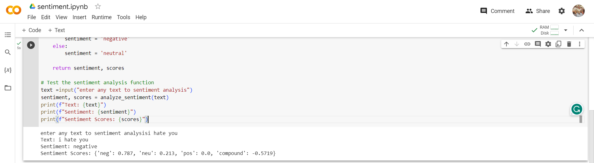

Python Code and Output
import nltk
nltk.download('vader_lexicon')
from nltk.sentiment import SentimentIntensityAnalyzer
def analyze_sentiment(text):
# Create a SentimentIntensityAnalyzer object
sid = SentimentIntensityAnalyzer()
# Analyze the sentiment of the text
scores = sid.polarity_scores(text)
# Determine the sentiment based on the compound score
if scores['compound'] >= 0.05:
sentiment = 'positive'
elif scores['compound'] <= -0.05:
sentiment = 'negative'
else:
sentiment = 'neutral'
return sentiment, scores
# Test the sentiment analysis function
text = input("Enter any text for sentiment analysis: ")
sentiment, scores = analyze_sentiment(text)
print(f"Text: {text}")
print(f"Sentiment: {sentiment}")
print(f"Sentiment Scores: {scores}")

